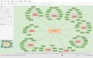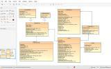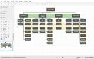
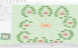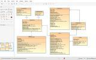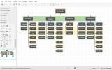от JGraph Ltd.
Использую
Бесплатный онлайн-сервис для создания диаграмм и блок-схем, самых разных форм и структур
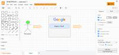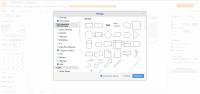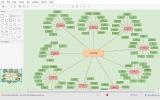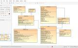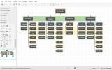
Похожие на Draw.io
Описание Draw.io
Draw.io — инструмент для создания диаграмм, блок-схем, интеллект-карт, бизнес-макетов, отношений сущностей, программных блоков и другого. Сервис распространяется на бесплатной основе с открытым исходным кодом. Draw.io обладает богатым набором функций для визуализации большинства задач пользователя.
При входе на сервис пользователь сразу попадает в рабочий интерфейс. У пользователя нет возможности для авторизации или регистрации, есть только опция выбора места для экспорта проекта. Процесс создания проекта выглядит следующим образом: пользователь перетаскивает из левой панели фигуры или элементы на рабочую поверхность, затем изменяет их — изменяет цвет, размер, шрифт текста, свойства фигуры (прозрачность, форма и т. д.). Draw.io позволяет отслеживать и восстанавливать изменения готовых проектов, импортировать и экспортировать в PDF, PNG, XML, VSDX, HTML, а также автоматически публиковать и делиться работами.
Инструмент работает с Google Диск, Google Workspace и Dropbox, глубоко интегрирован и удобен для работы с продуктами Confluence и Jira от Atlassian. Пользователи также могут работать с диаграммами в автономном режиме и сохранять их локально, используя настольное приложение для персональных компьютеров.
Инструмент позволяет создавать: графики, диаграммы, таблицы, презентации, блок-схемы, планы помещений, воронки продаж, ментальный карты, карты сайтов.
Особенности Draw.io:
Интересные факты
Платформа для онлайн-обучения, адаптации и тестирования сотрудников. Запуск за 1 день. Сделано в России.
5,0
Использую
Российский сервис для управления проектами и задачами. Как в одиночку, так и в команде. Таск-трекер, CRM, База знаний, управление пользователями и аналитика.
4,2
Использую
Это конструктор, при помощи которого вы строите систему управления своей командой или компанией. Вы сами определяете, какие бизнес-процессы вы хотите вести в ПланФиксе, и настраиваете их без привлечения программистов.
4,7
Использую
Взаимоотношения с клиентами (CRM)
Платформа для обмена документами между продавцами и поставщиками.
5,0
Использую
Контакты Draw.io
|
Сайт: https://www.draw.io/ Email: support@draw.io |
Основан в 2000 г. Находится в Великобритании |
Сервисы, с которыми у Draw.io есть интеграция
Google ДискGoogle ДокументыGitHubJiraConfluence
|
Минимум 0 ₽ Пробный период Бесплатный тариф Способ оплаты: По подписке |
Сервис бесплатен. Платные лишь дополнения к некоторым другим службам. |
Платформы: 
Развёртывание:
Доступные языки:Русский, English, Украинский
Бесплатный тариф
Доступ по протоколу HTTPS
Многофакторная авторизация
Резервное копирование в нескольких местах
Оплата
Минимум:0
Валюта минимальной цены:₽
Пробный период
Бесплатный тариф
Способ оплаты:По подписке
Безопасность и конфиденциальность
Доступ по протоколу HTTPS
Многофакторная авторизация
Резервное копирование в нескольких местах
Законодательство
Входит в Единый реестр российских программ
Схемы и диаграммы
Кейсы
4,8
Простой, быстрый, универсальный
Рекомендую
Хорошо
Надёжность
Удобство
Внешний вид
Функциональность
Плюсы
простота
слои
плагин и множество возможностей импорта
Идеально если нужно составить блок-схему, статусную модель, структуру бд, или нарисовать сложную систему, со множеством взаимосвязей.
Множество возможностей для импорта, достаточно быстро можно принести почти любую табличную информацию
4
6
0
Рекомендую
Хорошо
Удобство
Внешний вид
Цена
Функциональность
Плюсы
Готовые элементы для рисования диаграмм помогают сэкономить кучу времени, которое пришлось бы затратить на отрисовку их вручную.
WYSIWYG интерфейс: нашёл нужный элемент в списке, перетащил на лист, нашёл другой, соединил стрелочкой, подписал, и вуаля!
Минусы
Некоторые элементы блок-схем расположены не в своей категории (как минимум для некоторых UML-диаграмм нужны формы, за которыми приходится лезть в General)
Есть некоторая путаница с элементами, в которых можно писать текст, а также стрелочками (подробнее в комментарии)
Пользовались когда-то Draw.io всей группой в вузе, рисуя блок-схемы и UML-диаграммы для связанных с программированием предметов. Сервис замечательный и очень удобный, в принципе в нём есть всё, что нам было необходимо, так что он нас в прямом смысле спасал. Но есть у него и некоторые недостатки, осложняющие работу новичкам.
Например, есть элементы, в которых можно писать текст (такие как Process из General). При выделении и перетаскивании таких элементов текст тоже перетаскивается, и всё прекрасно. Но есть и элемент Text, который можно писать где угодно, в том числе и внутри элемента. И если не знать заранее, что можно (и нужно!) писать текст непосредственно в Process, то можно по незнанию попытаться наложить Text на Process. И выглядеть оно будет точно так же, как и Process со своим текстом, и всё вроде как прекрасно. Но - только до того момента, пока не понадобится перетащить Process, после чего новичок с удивлением обнаруживает, что Process перетащился, а Text нет. Ему придётся выделить и Process, и Text, а не только Process, как было бы, если бы он воспользовался встроенным в элемент текстом.
И со стрелочками абсолютно точно такая же ловушка - есть отдельные, вроде Directional Connector, а есть встроенные в сами элементы (тот же Process). И если не знать, что можно просто поставить на лист, условно, два Process и от одного к другому протянуть его же родную, встроенную стрелочку - то можно добавить между ними внешний Directional Connector, с которым придётся сильно повозится при перетаскивании.
Но за исключением этой путаницы (которой легко можно избежать, если знать о ней заранее), в Draw.io всё здорово, рекомендую его всем, у кого возникла задача нарисовать диаграмму. Надеюсь, мои комментарии про стрелочки и текст помогут другим новичкам не наступать на эти грабли. :)
5
6
1